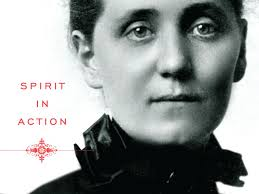

Synopsis

Who was Jane Addams? What is so great about her?
According to biography, that Jane Addams was born on September 6,1860 in Cedarville, Illinois and died on May 21,1935 in Chicago,Illinois at age 74 because of cancer. Also Swarthmore College said that “she had 12 brothers and sisters but from two different mothers. Some died really young because they were premature. Her parents were Sarah Weber Addams and John Huy Addams. Sarah Weber Addams (1817-1863)died when Jane was two years old because after giving birth to Jane she fell which cause her major injuries.. John Huy Addams had married Anna Hostetter Haldeman in 1864 after Sarah Weber had died one year later.
John was a note landowner, industrialist, legislator, and a war hero because he had support Lincoln during the civil war.John and Lincoln were close friends”.(Swarthmore1)
Additionally history said that,"in 1881 Jane had graduated as valedictorian from the Rockford Female Seminary. Also she was granted a Bachelor of Arts degree in June 1882. In September 1889,Jane and her friend Ellen Gates Starr open up the Hull- House to serve the immigrants in Chicago’s nineteenth ward." The Hull- House was to assume international significance as Addams and her associates to keep the protection of the immigrants ,child labor laws, and recreation facilities for children, woman suffrage, and world peace.She occupation was women’s rights activist, anti-war activist, and
philanthropic. In 1931 Jane Addams was honor by the American government for her effort for
peace and won the Nobel Peace Prize with Nicholas Murray Butler. And today Jane is known as
the nation’s leading pacifists